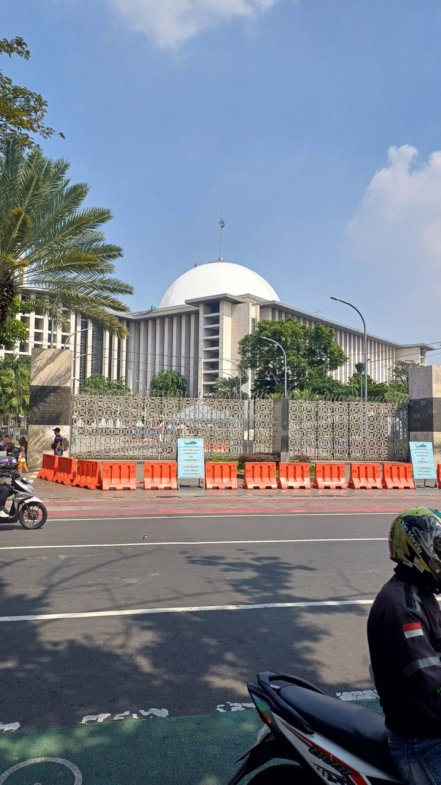

Pada laman sebelumnya, saya memiliki hobi yakni bepergian atau biasa disebut dengan jalan-jalan. Banyak tempat yang sudah saya kunjungi, mau di kota kelahiran saya Palembang, Jakarta, ataupun kota lain seperti Bandar Lampung, Cilegon, Dll sebagainya...
Berikut ini adalah gambar tempat-tempat yang sudah saya kunjungi sebelumnya :
1. Bunderan HI
2. Gelora Bung Karno
3. Banyuasin
4. Katedral Pasar Baru
5. Masjid Istiqlal
6. Lapangan Banteng
7. Monumen Nasional
8. Gajah Mada
9. Blok M
10. Sudirman
11. Pantai Anyer
12. Bakauheni
13. Cawang
14. Central Park Mall
15. Cilegon
16. Kabupaten Lebak
17. Menteng
18. Muara Enim
19. Pahoman Bandar Lampung
20. Setiabudi
21. Universitas Indonesia
Berikut tadi adalah tempat yang telah saya kunjungi selama kurang lebih setahun ini, mohon maaf apabila ada kesalahan gambar ataupun gambar yang dipublish tidak nyaman/tidak enak untuk dilihat, terimakasih juga telah melihat gambar saya ini ! :)